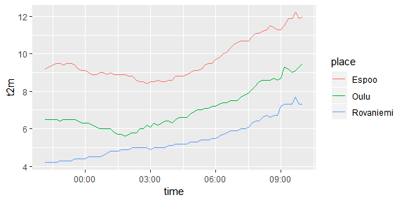

fmir provides simple tools for easily accessing up to date, open weather data from Finland. The data are made available by the Finnish Meteorological Institute and are licensed under CC-BY 4.0.
Key features in fmir include:
In order to access the download services of the API, you’ll need to obtain a key by registering for open data use with FMI. See FMI’s open data manual for details.
FMI provides varying types of data in several different formats in their API, implemented using OGC Web Feature Service (WFS). Currently the only format supported by fmir is the “simple” weather format. For a more comprehensive and feature-rich package for accessing the FMI API, check out https://github.com/rOpenGov/fmi.
The first step is of course to load the package:
To get started with downloading data, set your API key for the session with fmi_set_key():
Alternatively, you can also save your API key into an environment variable called FMIR_API_KEY for persistence across sessions. That is also the method used for creating this vignette.
Having set your key, we can construct queries to the API with fmi_query(), and then execute them with fmi_data(). A simple query with only a place parameter will return weather observations with a 10-minute interval for the past 12 hours:
# generate a (vector of) query url(s)
q <- fmi_query(place = c("Espoo", "Oulu", "Rovaniemi"))
# download the data corresponding to the query
weather <- fmi_data(q)
weatherHaving the data at hand, we can then use ggplot2 to draw a simple line graph of the recent temperatures in Espoo, Oulu and Rovaniemi:
library(ggplot2)
# draw a simple line graph of the recent temperature
ggplot(weather, aes(time, t2m)) + geom_line(aes(colour = place))